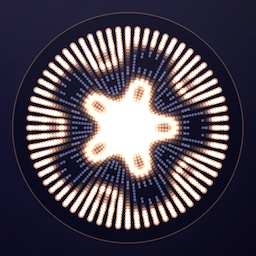
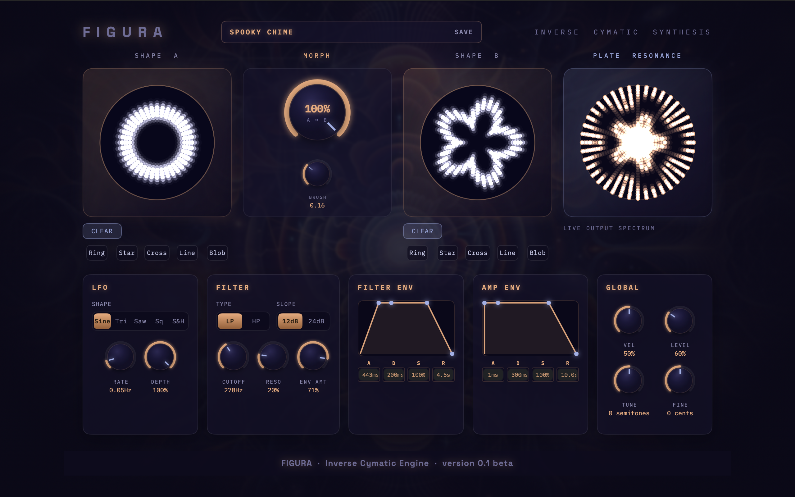

Most synthesisers ask you to pick a waveform. Figura asks you to draw one. Sketch a pattern onto a circular pad and Figura works out the exact vibration a real membrane would need to produce that shape, using the same physics that governs a drumhead. That vibration becomes the sound: bell like, glassy, and inharmonic in ways no ordinary oscillator bank can reach, because nothing here started life as a waveform. It started as a shape.
Figura is an 8 voice polyphonic Inverse Cymatic Synthesiser, a native AUv3 instrument built for MacOS. Draw two independent shapes, morph continuously between them, and shape the result with a filter and envelopes, all without leaving your DAW.
Figura is currently in beta. Join the TestFlight programme for early access and a direct line to shape how it develops.
Link to the Beta Test Page